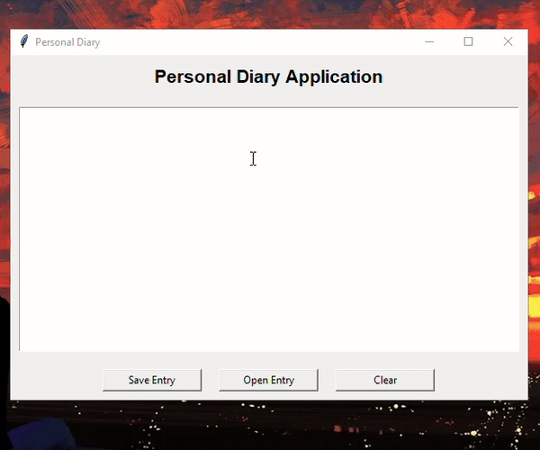

Personal Diary Application
A simple Python-based application for writing, saving, and viewing diary
entries.
Features
- Write daily diary entries using a text editor.
- Save entries to a file with automatic timestamps.
- Load and view previously saved entries.
- Clear the editor for a fresh start.
Demo

Source Code
You can download and run the full Python code locally:
View the Code on GitHub